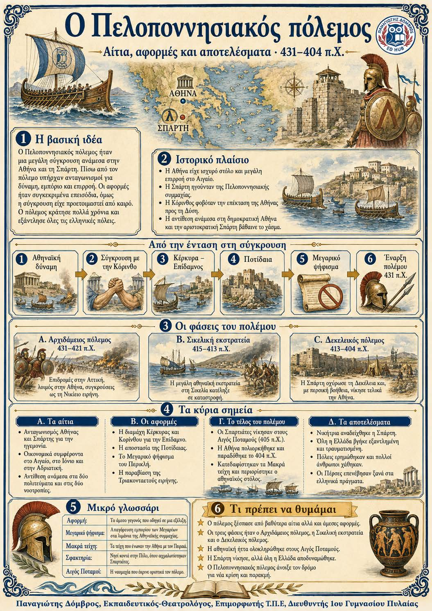

Πληροφοριογράφημα ενότητας
Το πληροφοριογράφημα αυτής της ενότητας δεν έχει ανέβει ακόμη. Οι σημειώσεις παραμένουν πλήρως διαθέσιμες.

Κεφάλαιο ΣΤ΄ · Αιτίες, αφορμές και αποτελέσματα
Ο Πελοποννησιακός πόλεμος ξέσπασε επειδή η Αθήνα και η Σπάρτη διεκδικούσαν την ηγεμονία στην Ελλάδα. Η οικονομική σύγκρουση, η πολιτειακή διαφορά και ο φόβος της Σπάρτης για την αυξανόμενη δύναμη της Αθήνας μεγάλωσαν την ένταση. Ο πόλεμος κράτησε είκοσι επτά χρόνια, έληξε με νίκη της Σπάρτης και άφησε ολόκληρο τον ελληνικό κόσμο βαθιά τραυματισμένο.
Αυξανόμενη δύναμη της Αθήνας ↓ Οικονομικός και πολιτικός ανταγωνισμός ↓ Κέρκυρα, Ποτίδαια και Μεγαρικό ψήφισμα ↓ Πελοποννησιακός πόλεμος ↓ Σπαρτιατική νίκη και γενική παρακμή
Ηγεμονία: Η κυριαρχία μιας ισχυρής πόλης πάνω σε άλλες πόλεις. Πολιτειακή διαφορά: Η διαφορά στον τρόπο με τον οποίο οργανώνεται και κυβερνάται μια πόλη. Συνθηκολόγηση: Η αποδοχή όρων ειρήνης από την πλευρά που δεν μπορεί να συνεχίσει τον πόλεμο.
Αφορμή: Το συγκεκριμένο γεγονός που προκαλεί την έναρξη μιας σύγκρουσης. Κατά Μεγαρέων ψήφισμα: Η απαγόρευση εμπορίου και χρήσης συμμαχικών λιμανιών για τους Μεγαρείς. Μακρά τείχη: Τα οχυρωματικά τείχη που ένωναν την Αθήνα με τον Πειραιά.
